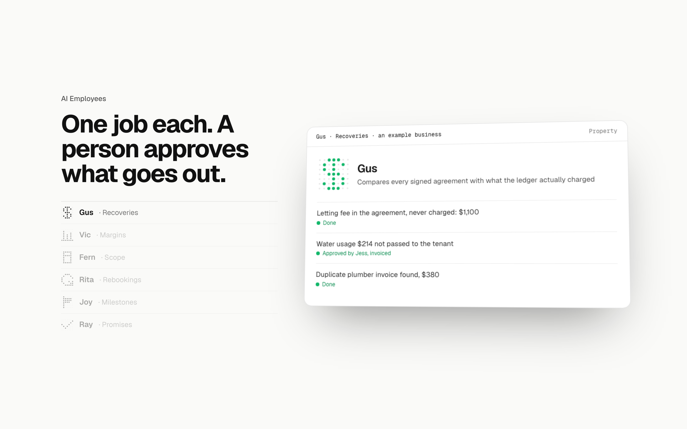
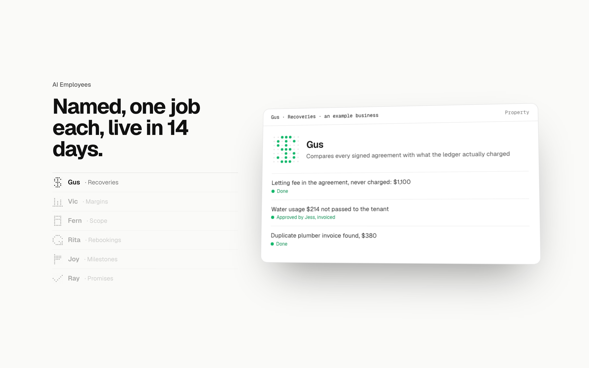
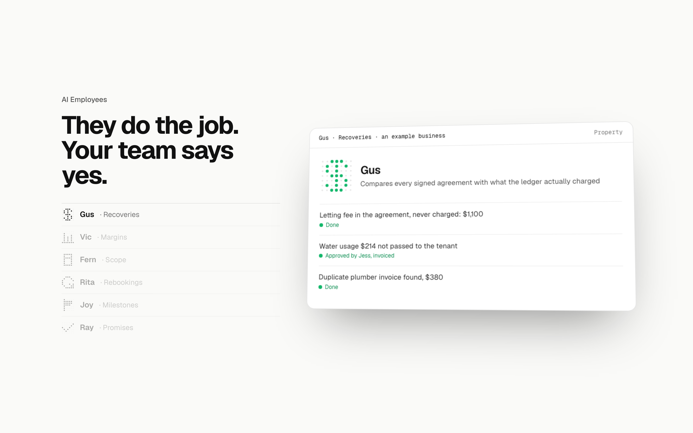
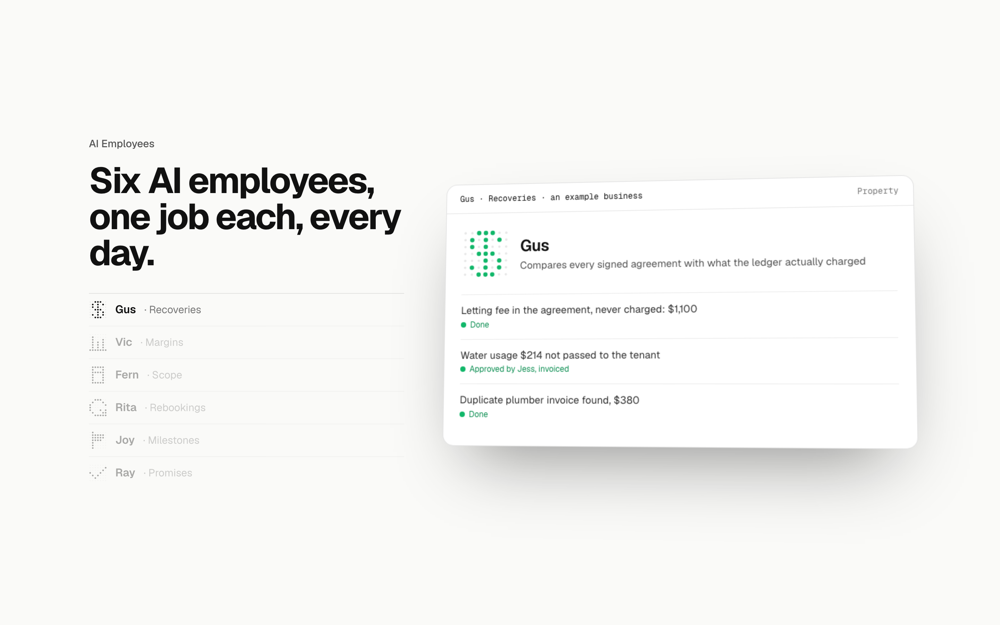

AI Employees: the heading three ways
Detail 1 of 5 for the AI Employees section. The scroll scene as built at 1440x900 with Gus’s day finished, only the heading changed. The label stays "AI Employees". Then the left list, the card, the close and the phone cards, each the same way.
Today“One job each. A person approves what goes out.”What the section says now: the unit and the rule, in two short sentences.

1. Named, and live in 14 days“Named, one job each, live in 14 days.”Ties the section to the ladder’s second rung: the thing you can buy, with its name and its promise. Recommended.

2. The division of labour“They do the job. Your team says yes.”The shortest statement of how the two work together; the approve button under it is the proof.

3. The roster“Six AI employees, one job each, every day.”Counts the roster and says the cadence; reads as a team sheet.
